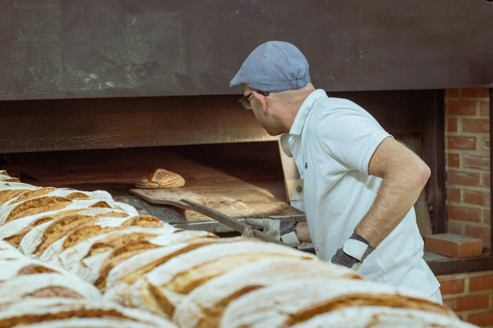

Our Story
Founded in the heart of the neighborhood, North Star Bakery has been serving warm, handmade goods to our community since 2018.
Sourcing Philosophy
We partner exclusively with local farmers and millers to source organic, high-quality grains and ingredients, ensuring sustainability and exceptional flavor in every bite.
Staff Highlights
Our dedicated team of master bakers brings decades of combined experience, crafting every loaf and pastry with passion and care.
